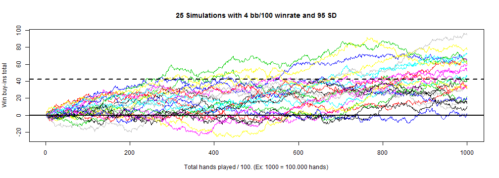
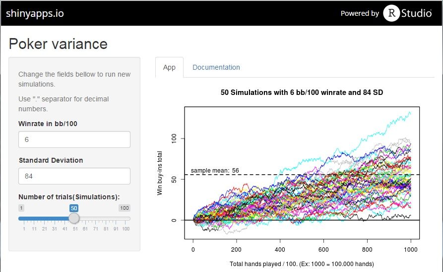

New poker players have problems to understand how variance can impact their results and how it works in the long term.
This app was created to explain variance for poker players in the long term.
Icaro C. Bombonato
Senior Developer at minhavida.com.br
New poker players have problems to understand how variance can impact their results and how it works in the long term.
This app was created to explain variance for poker players in the long term.
Based on two variables that are comom for the players, Winrate and Standard Deviation, we can plot a simulation of 100k hands played and see the possible outcomes in Buy-ins.
That way, the players can have a clue for what to expect in terms of results (in buy-ins), in a range of 100k hands played based on their win rate and stardard deviation.
After you input your variables, in this case winrate 4, sd 95 and 25 trials, you will got a plot like the one bellow:
winrate <- 4;sd <- 95;trials <- 25
plotData(simulateData(winrate, sd, trials), winrate, sd, trials)

And now, one screen shot of the app running at shinyapps.io:
